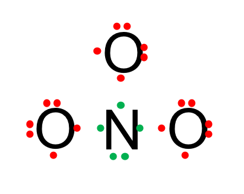
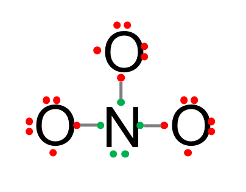
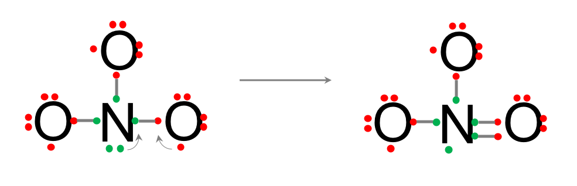
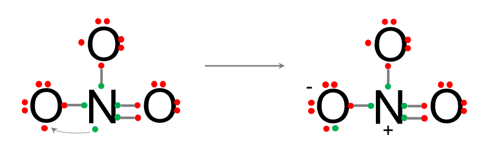
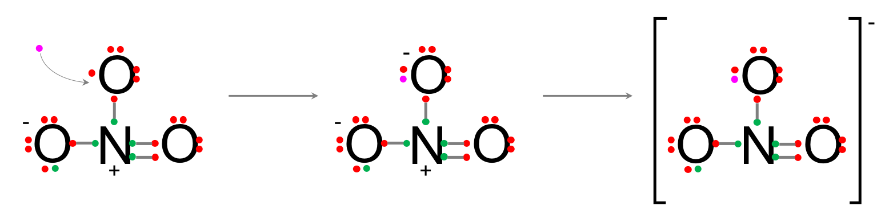
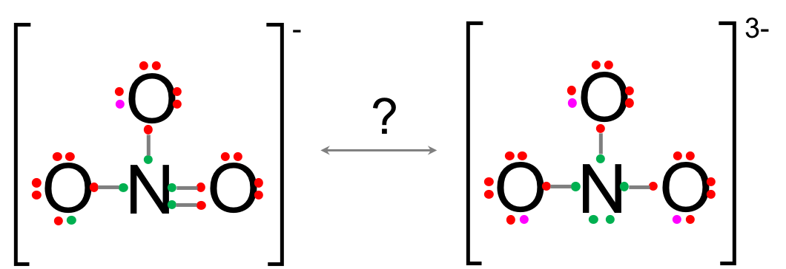
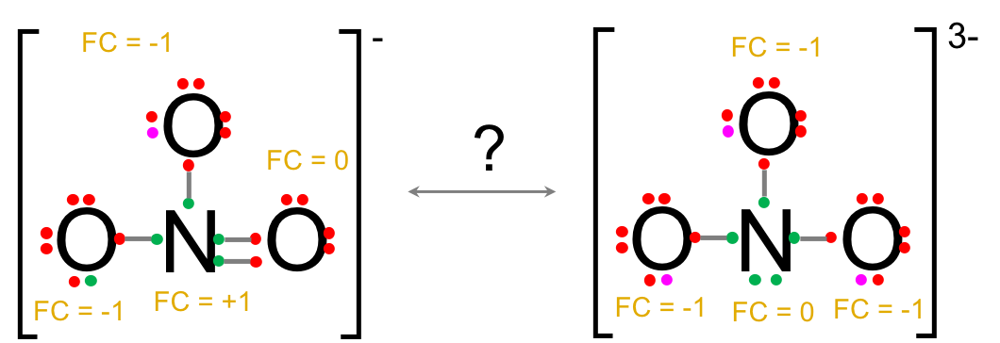
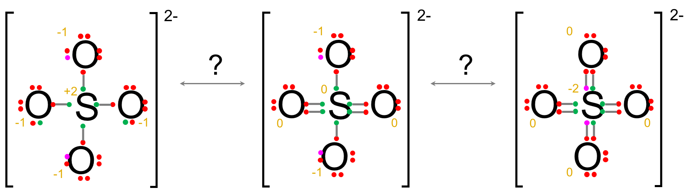

A Appendix A
A.1 Quick guide on atom orbitals and Lewis dot structure
The key to understanding the storage and transfer of energy in the biosphere lies on the allocation of electrons as described in Chapter 2. However, it might be a good thing to have a refresher on what electron orbitals, valence electrons, and Lewis structures are. This appendix proposes a quick refresher on these concepts.
A.1.1 Electron orbitals
Atoms are made of a nucleus and electrons. The nucleus itself is made of protons and neutrons. In the simplified periodic table below (Figure A.1), the first three lines of the periodic table are represented and the atomic numbers are given for each atom.
The atomic number or proton number of a chemical element is the number of protons found in the nucleus of an atom. It is identical to the charge number of the nucleus. The atomic number uniquely identifies a chemical element. In an uncharged atom, the atomic number is also equal to the number of electrons (Wikipedia contributors 2018l).
Figure A.1: simplified periodic table that show the s and p orbitals for the first 18 atomic numbers (number of protons = number of electrons in each atom)
Orbitals express the two waves and particle natures of electrons. At the bottom of each atom box in Figure A.1, one can see odd symbols like 1s2 2s22p2 for the carbon atom. The ‘s’ and ‘p’ letters represent two different electron orbitals. The numbers 1 and 2 before the letter represent the angular momentum of the orbitals, which is also an indication of the electron energy levels. An electron orbital characterizes the high probability of where an electron might be located around the nucleus. Each orbital can be occupied by a maximum of 2 electrons. The wave nature of electrons tells us that the electrons are stable, for a given energy level, in their orbitals. For the biogeochemical processes of this book, we only deal with the CHONSP atoms, which only have s, p, and d orbitals, not f, g, h, etc.
What are these bizarre letters s, p, d, f, g, etc. describing orbitals anyway…?
They are derived from the description by early spectroscopists of certain series of alkali metal spectroscopic lines as sharp, principal, diffuse, and fundamental" (Wikipedia contributors 2018l).
So now, for the low energy level 1, the orbital s appears to be a sphere. In other words the one or two atoms in this orbital will have a very high probability of being in that sphere. The one electron of hydrogen will thus be somewhere in that orbital. For helium, its two electrons will be in this sphere as well and be extremely stable. With only one electron in its orbital, hydrogen is just not very stable, and it ‘tries’ to bond with other atoms such that they can ‘share’ electrons so that the H 1s orbital is ‘visited’ by 2 electrons, which makes hydrogen ‘happy’ and stable.
Now, for lithium and Beryllium, which have 3 and 4 electrons (Figure A.1), respectively, their electrons fill a new s orbital, which also is a s orbital with a spherical shape as well, just bigger as the electrons have more energy. Boron and Carbon have 5 and 6 electrons, and their orbitals are not spheres any more. The theory tells that the high probability for these electrons is to be in a space that looks like two ‘eggs’ opposed to each other (Figure A.2). These are called p orbitals. There can be 3 p orbitals which are located along three x,y,z axes with the exact same level of energy.

Figure A.2: Shape of the electron orbitals s, p, d, and f. Obtained from https://chem.libretexts.org/
Electron orbitals that have the same energy levels are called degenerate orbitals. The lower energy orbitals are filled before higher energy orbitals. Hund’s rule states that degenerate orbitals are filled evenly before moving to higher energy orbitals. For p orbitals, which consist of three degenerate orbitals that all have exactly the same energy level, we put a single electron in each orbital first then put a second electron (of opposite spin, we have not mentioned spins yet, and will not here) in each orbital to fill them with a total of six electrons.
Figure A.3: Hund’s rule to correctly fill in orbitals for the Carbon and Nitrogen atoms. Up and down arrows represent the electron spins. Electrons have to have opposite spins to be located in the same orbital. This has little impact for our purpose
The electrons for Carbon, Nitrogen, Oxygen, Phosphorus, and Sulfur in their orbitals are represented in Figure A.4 below. you can see that, N and P, and O and S 2p and 3p orbitals, respectively, follow the same ‘filling’ patterns.
Figure A.4: Hund’s rule to correctly fill in orbitals for the Carbon, Nitrogen, Oxygen, Phosphorus, and Sufur atoms
A.2 Orbitals hybridization
This is what the theory tells us. In practice, it seems that the interactions of electrons among orbitals, and with bond atoms, make things a little different and new hybrid orbitals actually form. This is the basis of geometrical configuration of molecules and explains the shape of molecules and angles between atoms in a molecule. Does it really matter in biogeochemical processes? Actually quite a bit. Starting with the shape of the water molecule. But before then, let us explain orbital hybridization using the illustration in Figure A.5.
Figure A.5: sp, sp2, and sp3 orbital hybridization and illustration for the carbon atom
The electronic signature for carbon is 1s2 2s22p2. The Hund’s rule for filling orbitals suggests (Figure A.4) that one of the p orbital has no electrons. Orbital hybridization consists in moving one of the electron in the 2s orbital to fill this empty p orbital. But since electrons on the s orbital are much less energetic than the p ones, the electrons in the resulting new hybrid orbitals are not going to be as energetic. Three possible hybrid orbitals exist in nature: sp, sp2, and sp3 orbitals. For the example of carbon, there also are three orbital configurations.
The lowest energy hybridization is that the 4 electrons on 2s22p2 end up in four orbitals, i.e., two in 2 sp orbitals and two in 2 p orbitals, one electron in each. This is the configuration illustrated at the bottom row, and application of this configuration is the CO2 molecule (Figure A.5). The mid energetic configuration is also four orbitals, but this time with 3 sp2 orbitals and 1 p orbital. This is the configuration illustrated at the middle row with an application being the aldehyde configuration in a molecule. The highest energy hybrid orbital is referred to as sp3, where the original 2s22p2 are hybridized into 4 sp3 orbitals, leading to a tetrahedral configuration of the orbitals, with methane being an illustration.
So, the same atom can practically change its orbital configuration. And all of this depends on the molecule in which this atom is involved. This is true for all atoms, and particularly the ones we are concerned about, i.e., C, N, O, P, and S (H orbital does not change!). Since, hybridizations change depending on molecular configurations (and vice versa), it is time to recall the two types of atomic bonds prevailing in molecules of interest to us: the σ and π bonds.
A.3 σ and π bonds
In chemistry, sigma bonds (σ bonds) are the strongest type of covalent chemical bond. They are formed by head-on overlapping between atomic orbitals. […] A σ-bond is symmetrical with respect to rotation about the bond axis. […] Sigma bonds are the strongest type of covalent bonds due to the direct overlap of orbitals, and the electrons in these bonds are sometimes referred to as sigma electrons. (Wikipedia contributors 2018i)
A covalent bond, also called a molecular bond, is a chemical bond that involves the sharing of electron pairs between atoms. For many molecules, the sharing of electrons allows each atom to attain the equivalent of a full outer shell, corresponding to a stable electronic configuration. (Wikipedia contributors 2018k)
For the CHONSP atoms, σ bonds can be formed between s, p, and spn orbitals (Figure A.6).
](pictures/SigmaBonds.png)
Figure A.6: Examples of σ bonds with different types of overlap, from s, p, and spn orbitals. Obtained freely and modified under the Creative Commons Attribution-Share Alike 4.0 International license
pi bonds (π bonds) are covalent chemical bonds where two lobes of an orbital on one atom overlap two lobes of an orbital on another atom. The Greek letter π in their name refers to p orbitals, since the orbital symmetry of the pi bond is the same as that of the p orbital when seen down the bond axis. One common form of this sort of bonding involves p orbitals themselves. […] Pi bonds are usually weaker than sigma bonds. (Wikipedia contributors 2018h)
Typically, a single bond is a sigma bond while a multiple bond is composed of one sigma bond together with pi or other bonds. A double bond has one sigma plus one pi bond, and a triple bond has one sigma plus two pi bonds.
](pictures/PiBond.png)
Figure A.7: Examples in the ethylene molecule of σ and π bonds. The full overlap of sp^2 orbitals between the C and H and C and C atoms leads to σ bonds and the overlap between the p orbitals leads to a π bond shown as an elongated blue lobe that extends both above and below the plane of the molecule. Obtained freely from https://chem.libretexts.org/ under the Creative Commons Attribution-Share Alike 4.0 International license
Now that all these important concepts are described, some illustrations and important consequences of bonds and orbital hybridization can be useful. Important examples of molecules where sp, sp2, and sp3 orbitals exist are presented next. Before this, it should be noted that there does not seem to be full consensus on how orbits necessarily form. The orbital hybridization is a model that explains many other observations but remains just a model. There are other models out there but this is beyond the scope of this summary. Additionally, there often are several possibilities of hybridization, and chemistry books do not necessarily agree on what hybrid orbitals atoms take in molecular arrangement. The steric number gives a nice indication on simple molecules on the hybrid orbital the central atom may take.
The steric number (SN) is equal to the summation of the number of atoms bound to the central atom + the number of lone pairs left on the central atom. The lone pair can be determined using the Lewis dot structure, presented later in this chapter. The general rule for the molecules we deal with is as such:
- if SN = 4, the central atom follows a sp3 hybridization
- if SN = 3, the central atom follows a sp2 hybridization
- if SN = 2, the central atom follows a sp hybridization
A.4 sp3 hybridization examples
A.4.1 Methane
Methane (SN=4+0=4) is the quintessential example of the hybridization of the Carbon 2s22p2 orbitals into 4 sp3 orbitals. The overlap of the sp3 orbitals of carbon with the 1s orbital of the hydrogen atoms form σ bonds, and create a symmetrical tetrahedral molecular shape. In aliphatic chains, the -[CH2]- are not straight but have angles between consecutive C-C bonds because of the sp3 orbitals. This is one of the reasons for the skeletal formula in organic chemistry (Figure A.8).
Figure A.8: The sp3 hybrid orbitals in CH4, Modified from https://www.slideshare.net/pedagogics/2012-orbital-hybrization-sigma-and-pi-bonds
A.4.2 The water molecule
In the molecule of water, the oxygen (SN=2+2=4) orbitals are hybrid sp3 and two of them from two σ covalent bonds with hydrogen, leaving two sp3 orbitals as two lone pairs or electrons (Figure A.9).
Figure A.9: The sp3 hybrid orbitals in H2O, leaving two lone pairs of electrons in two of the orbitals. Obtained freely under the Creative Commons Attribution-Share Alike 4.0 International license
These lone electron pairs, opposite to the bonds with the H atoms, thus form an important electronic density, rendering the molecules asymmetric both on a geometric and on a charge basis, with the two lone pairs forming a slight electronegative side of the molecule, and the two hydrogen atoms, forming a slight electron positive side of the molecule (Figure A.10). The water molecule:
- is thus referred to as a polar molecule, i.e., it “has a net dipole as a result of the opposing charges (i.e. having partial positive and partial negative charges) from polar bonds arranged asymmetrically” (Wikipedia contributors 2018n)
- as a result, water is a good polar solvent that dissolves salts and hydrophilic organic molecules such as proteins, nucleic acids, mono-, disaccharides, and polysaccharides.
- “Because of its polarity, a molecule of water in the liquid or solid state can form up to four hydrogen bonds with neighboring molecules. These bonds are the cause of water’s high surface tension and capillary forces” (Wikipedia contributors 2018r). It is thanks to these capillary forces that, among other things, soils can store very significant amount of water which plants can use for their growth even during drought times.
- “The hydrogen bonds are also the reason why the melting and boiling points of water are much higher than those of other analogous compounds like hydrogen sulfide (H~2S). They also explain its exceptionally high specific heat capacity (about 4.2 J/g/K), heat of fusion (about 333 J/g), heat of vaporization (2257 J/g), and thermal conductivity (between 0.561 and 0.679 W/m/K). These properties make water more effective at moderating Earth’s climate, by storing heat and transporting it between the oceans and the atmosphere.” (Wikipedia contributors 2018r)
![Illustration of the electric dipole of the water molecule due slight electronegativities and positivies on the O and H atoms, respectively; Hydrogen bonds are one the consequence the polar nature of water. Sources: By User Qwerter at Czech wikipedia: Qwerter. Transferred from cs.wikipedia to Commons by sevela.p. Translated to english by by Michal Maňas (User:snek01). Vectorized by Magasjukur2 - File:3D model hydrogen bonds in water.jpg, CC BY-SA 3.0, https://commons.wikimedia.org/w/index.php?curid=14929959 ; and By Riccardo Rovinetti - Own work, CC BY-SA 3.0, https://commons.wikimedia.org/w/index.php?curid=31556358](pictures/WaterPolarHBonds.png)
Figure A.10: Illustration of the electric dipole of the water molecule due slight electronegativities and positivies on the O and H atoms, respectively; Hydrogen bonds are one the consequence the polar nature of water. Sources: By User Qwerter at Czech wikipedia: Qwerter. Transferred from cs.wikipedia to Commons by sevela.p. Translated to english by by Michal Maňas (User:snek01). Vectorized by Magasjukur2 - File:3D model hydrogen bonds in water.jpg, CC BY-SA 3.0, https://commons.wikimedia.org/w/index.php?curid=14929959 ; and By Riccardo Rovinetti - Own work, CC BY-SA 3.0, https://commons.wikimedia.org/w/index.php?curid=31556358
It is rather extraordinary to realize that all these properties are rooted in the electronegativity of oxygen, to the hybridization of the s and p orbitals into tetrahedral sp3 orbitals, and thus to the steric and electrical asymmetry of the water molecule!
A.4.3 Ammonia and Ammonium
Similar to water, the electron orbitals for the Nitrogen atom in NH3 (SN=3+1=4) and NH4+ (SN=4+0=4) are hybridized into sp3 orbitals. As a result the ammonia molecule has a pyramidal shape (Figure A.11), leaving a lone pair of electrons in the sp3 orbital opposite to the plan made by the H atoms. This lone pair makes ammonia a base, that is a proton acceptor to form ammonium. Similarly to water, and because of the lone pair or electron, ammonia is a polar molecule and thus has the ability to make hydrogen bonds and is thus highly miscible in water. Ammonium, the protonated form of ammonia, uses the lone pair of electrons of ammonia to create a new bond with a proton to eventually form a positively charged tetrahedral molecule, where all N-H bonds are equivalent, and polar covalent bonds. More details on the protonation of ammonia into ammonium and the equilibria is provided in the glossary.
Figure A.11: Orbital configuration for ammonia, NH3. Each N–H σ-bonding orbital, containing 2 electrons, is formed from a N sp3 hybrid orbital and a H 1s orbital. The remaining lone pair of electrons occupies the fourth tetrahedral position producing a pyramidal structure. Obtained freely under the Creative Commons Attribution-Share Alike 4.0 International license
A.4.4 Sulfate
The Lewis dot structure tells us (see below) that there is 2 single bond and 2 double bonds. This makes for a total of 10 shared electrons for sulfur…?! This is possible because sulfur belongs to the third period and has d orbitals open (Figure A.12). The steric number for sulfur in the sulfate molecule (SO42-) is thus SN=4+0=4, suggesting a sp3 orbital hybridization and a tetrahedral geometrical configuration. As a result the sulfate molecule has a pyramidal shape (Figure A.12). Two of the electrons on the filled orbitals 3s and 3p move into 2 of the d orbitals. The π bonds form between the d orbitals and one p orbital of the uncharged oxygen atoms. The σ bonds from from the 4 sp3 orbitals and one p orbital of the negatively charged oxygen atoms (Figure A.12).
Figure A.12: Orbital configuration for ammonia, SO42-. Each S–O σ-bonding orbital, containing 2 electrons, is formed from a S sp3 hybrid orbital and a O 2p orbital. The two π bonds are formed from the 3d orbitals and the 2p orbitals of the uncharged oxygen atoms
A.4.5 Phosphate
Phosphate (PO43-, SN=4+0=4) is probably one of the most fascinating molecule in the living world. Because phosphorus is in the third period of the periodic table, just as sulfur is (Figure A.1), it does not have to follow the octet rules and can accept extra electrons in the d orbitals. Theoretically, the phosphorus orbitals can be hybridized such that the 3s orbital filled with two electrons, and the 3d orbitals filled with one electron each hybridize into 5 sp3 orbitals in the molecule of phosphate. However, in the phosphate molecule, this does not happen. Instead, the hybridization generates 4 sp3 orbitals and one 3d orbitals (Figure A.4). As a result, the phosphate molecule has a tetrahedral steric configuration. Three of the Oxygen atoms gain electrons to become negative and they theoretically do not need to hybridize to from σ bonds using their p orbitals with the sp3 orbitals of the phosphorus. The π bond forms with the 3d orbital left of the phosphorus and the second open 2p orbital of the uncharged O atom. The ‘3-’ charge of the deprotonated phosphate is actually spread evenly on the four oxygen, and each phosphorus-oxygen bond can be considered have some double bond character (Figure A.13). It is the plethora of electrons on the phosphate molecule that is the basis of the storage and release of energy in the ATP molecule.
Figure A.13: Orbital hybridization of Phosphorus for the phosphate molecule, and below the even spread of the π bond. Obtained with permission from https://chem.libretexts.org/
A.5 sp2 hybridization examples
A.5.1 Nitrate
In the nitrate molecule, the nitrogen atom (SN=3+0=3) loses an electron and becomes N+ and reconfigures its orbitals to have three sp2 and one 2p orbitals, each filled with one electron only. The nitrate molecule is thus a planar molecule. Two of the oxygen atoms gain an electron and effectively become O-. It is unclear at this point whether or not the oxygen atoms themselves reconfigure their orbitals or not… There seems to be conflicting descriptions. Most text books tend to agree that the π bond is not particularly located on one oxygen atom, but rather that each of the σ bond has an additional π like bond. The model proposed in Figure A.14 works, although the resonance among all oxygen atoms is not that straight forward in my opinion. Each of the sp2 orbital of N makes a covalent σ bond with one of the 2p orbitals of each of the oxygen. The two 2p orbitals left on both of N and O atoms form a π bond. Similar to Phosphate, the electrons of the π bond spread evenly on the three oxygen, and each nitrogen-oxygen bond can be considered to have some double bond character π bond (Figure A.14).
Figure A.14: Orbital hybridization of nitrogen for the nitrate molecule, and the even spread of the π bond
A.5.2 Nitrite
In the nitrite molecule, the nitrogen atom (SN=2+1=3) does not need to lose an electron and reconfigures its orbitals to have three sp2 and one 2p orbitals, with one sp2 orbital filled with 2 electrons and all other orbitals filled with one electron only. One of the oxygen atoms gains an electron and effectively become O-. The model proposed in Figure A.15 works. Two of the sp2 orbital of N makes a covalent σ bond with one of the 2p orbitals of each of the oxygen. The two 2p orbitals left on both of N and O atoms form a π bond. Similar to nitrate, the electrons of the π bond spread evenly on the two oxygen, and each nitrogen-oxygen bond can be considered have some double bond character π bond (Figure A.15).
Figure A.15: Orbital hybridization of nitrogen for the nitrite molecule, and the even spread of the π bond
A.6 sp hybridization examples
A.6.1 Carbon dioxide
Carbon dioxide (CO2) is the quintessential molecule to illustrate sp hybridization. Carbon dioxide has two double bonds with oxygen, making its steric number to be SN=2+0=2. This suggests that the Carbon orbitals rearrange into 2 sp orbitals. In carbon dioxide, the oxygen atoms also rearrange into sp2 hybrids (Figure A.16), such that the two sp orbitals of the carbon form a σ bond with one of sp2 orbitals available of the oxygen atoms. Then the 2p orbitals left form π bonds together. Because of the configuration of the 2sp2p orbitals, the double bonds are at 90° of each other (Figure A.16).
Figure A.16: sp orbital hybridization of carbon for the carbon dioxide molecule, and sp2 orbital hybridization of the oxygen atoms
A.6.2 Dinitrogen
Dinitrogen (N2) steric number is SN=1+1=2. This suggests that the Nitrogen orbitals rearrange into 2 sp orbitals. The two sp orbitals of the nitrogen form a σ bond together. Two π bonds form as the electrons in the 2p orbitals are shared among the two atoms. This is the reason for the formation of the triple bond in dinitrogen (Figure A.17). This bond is so strong that although there are two lone pairs left on each of the nitrogen atoms, which would make dinitrogen suceptible to lose these electrons, the dinitrogen molecule is mostly inert and unreactive for most metabolic pathways. This is why dinitrogen is referred to as unreactive nitrogen. The triple bond can be broken physically by lightnings, or biologically in very specialized cells such as heterocysts of cyanobacteria, or by symbiotic bacteria living in legumes or (Alnus sp.) root nodules.
Figure A.17: sp orbital hybridization of nitrogen for the dinitrogen molecule and formation of the triple bond with two lone pairs left per N atom. The σ bond is formed by direct overlap of the sp orbitals and the the two π bonds by sideways overlap among the 2p orbitals (px and py)
A.7 Example of no hybridization
A.7.1 Dihydrogen sulfide
Interestingly, dihydrogen sulfide (H2S) orbitals do not seem to follow the normal hybridization scheme described above. The steric number for the sulfur is SN=2+2=4, so it would expected that sulfur orbitals would hybridize into sp3 forms. This would then suggest that the angle between the H-S bonds would be around 109° as is the case for the very similar H2O molecule. But measurements suggest that the angle is more like 92°, closer to the 90° angle between the p orbitals (Figure A.18).
Figure A.18: Direct overlap of 1s orbitals of hydrogen atoms with the 3p orbitals (e.g., py and pz) of the S atom, for a final 92° angle between the H-S σ bonds. Modified from https://www.periodni.com/gallery/formation_of_h2s.png
{kind=link}
A.8 Lewis dot structures
A.8.1 Valence electrons and octet rule
Lewis dot structures are representation of the bonds between atoms in molecules and of the lone pairs of electrons that might be left on a particular atom. It is a very powerful tool for us as it allows to allocate the electrons in a molecule (see this Chapter). Several rules have been established to draw Lewis dot structures, which we recall here.
Several terms need to be recalled here first.
- Valence electrons: valence electrons are the electrons that are present in the outer electronic shell of a particular atom. For C, N, and O, valence electrons are the electrons in the 2s2p shell. For S, and P, valence electrons are the electrons in the 3s3p3d outer shell. And for H, the valence electron is the one in the 1s shell.
An atom with a closed shell of valence electrons (corresponding to an electron configuration s2p6) tends to be chemically inert. Atoms with one or two more valence electrons than are needed for a “closed” shell are highly reactive due to the following reasons:
- It requires relatively low energy to remove the extra valence electrons to form a positive ion.
- Because of their tendency either to gain the missing valence electrons (thereby forming a negative ion), or to share valence electrons (thereby forming a covalent bond) (Wikipedia contributors 2018q).
The tendency to gain missing valence electrons to form a closed shell for the CHONSP (8 electrons for CONSP, 2 electrons for H) is called the octet rule, because each bonded atom has eight valence electrons including shared electrons.
In their natural state,
- Hydrogen (H) has 1 valence electron is and is said to be univalent.
- Carbon (C) has 4 valence electrons, and as a result will tend to have 4 bonds with other atoms in a molecule. There are exceptions such as in carbon monoxide.
- Nitrogen (N) and Phosphorus (P) have 5 valence electrons. N will tend to form three bonds with other atoms in most cases, although it can lose an electron to form 4 bonds like in NH4+, or in N2O, and technically becomes positive. For the vast majority of our cases, P is in the form of phosphate in which P forms four σ bonds and one π bond thanks to the 3d orbital available (see phosphate).
- Oxygen (O) and sulfur (S) have 6 valence electrons. They will tend to form two bonds in most cases, although they can also gain one electron, become negative, and only have one single bond and a third lone pair of electrons. In the case of the sulfide ion S2-, sulfur gains two electrons and does not bond with any other atom.
A.8.2 Building Lewis dot structures
Several guidelines are available on chemistry books and tutorials. The one that makes the most sense to me is the technique that consists in drawing each atom with all its valence electrons, and try to build the molecule from this information. Let us take the example of nitrate.
- Draw all atoms with their valence electrons around them, and put the most electronegative electrons on the outside of the future molecule

- Draw bonds between two valence electrons for the center and outer atoms. Now, the Nitrogen atom has a lone pair of electrons and three single bonds. As it shares the electrons with oxygen, its outer shell now has eight electrons, so the octet rule is fulfilled. However, each of the oxygen only has 7 electrons so the octet rule is not fulfilled.

- Since there is a lone pair of electrons on the N, it is possible to share one electron of this lone pair with another electron on one of the oxygen to create a double bond. The octet rule is now fulfilled for the oxygen on the right of the diagram below. It would be tempting to do the same with the left over electron on the Nitrogen to create another double bond with another oxygen. But then, the nitrogen would have five bonds, or the equivalent of 10 shared electrons, and that would go against the octet rule. So this is not a possibility. But now, the octet rule for the Nitrogen is not fulfilled any longer, as it effectively shares 9 electrons…

- Because oxygen is a lot more electronegative, and nitrogen has this one extra electron left, it can ‘steal’ this electron from the nitrogen, which effectively becomes positive, but regains its octet rule, while the oxygen on the left becomes negative, and has its octet rule fulfilled. The last oxygen now still has 7 electrons total. It needs another one from somewhere. The current molecule is neutral as it N is positive and one O is negative.

- An extra electron has to come from elsewhere to fulfill the octet rule of the third oxygen, making this oxygen negative as well, and the whole molecule minus one negative.

- Well, if it is so easy to get an electron ‘from elsewhere’, why not applying this to each oxygen, to begin with like in the diagram below.

This would make a NO33- which has all its octet rules fulfilled. To decide we need to introduce the important concept of formal charge. The formal charge (FC) of each atom can be calculated as:
- FC = (nb of valence electron) - (nb of bonds) - (nb of electrons on lone pairs)
In fact, a Lewis dot structure is not complete until the formal charges on each of the atoms are added next to each of the atom. In the end, the most stable/likely molecule is the molecule for which:
- The formal charge will be as low as possible on each of the atoms, AND,
- keep the total charge of the molecule as low as possible, AND,
- have the most electronegative atom have the most negative formal charge.
In the previous NO3- vs. NO33-, one cannot conclude among the two molecules just on the formal charges and the electronegativity criteria.

However, the molecules being otherwise equal, the lower overall molecular charge of NO3- makes this form possible over the NO33- form.
In the sulfate example below, three forms are possible. The octet rule for S is fulfilled for the form on the left, but because sulfur is on the third period, some electrons can be on the 3d orbitals, hence the possibility for more than 8 shared electrons like on the middle and right forms. The formal charges are higher in absolute value for the left form compared to the two others, which makes them preferable. The formal charges on the right form are equivalent to the ones on the middle form. However, in the right form, the formal charge on the lesser electronegative sulfur is lower than those on the oxygens, rendering this form unlikely as well. The probable, preferred form is thus the middle form with two single bonds, two double bonds and two oxygen atoms with a minus one negative charge.

This concludes this quick reminder on minimum knowledge applicable to electron orbitals, molecular configurations, and Lewis dot structure. There are many guides and tutorials available on the web and elsewhere to complete this guide, which should be sought to confirm and verify your understanding. Below are some exercises for training purposes.
A.9 Exercises
- Draw the molecular configuration and the Lewis dot structure of:
- Nitrous oxide
- Nitric oxide
- Sulfur trioxide
- Sulfur dioxide
- Phosphate
- Ethanol
- Carbon monoxide
References
Wikipedia contributors. 2018h. “Pi Bond.” https://en.wikipedia.org/w/index.php?title=Pi_bond&oldid=830933062. https://en.wikipedia.org/w/index.php?title=Pi_bond&oldid=830933062.
Wikipedia contributors. 2018i. “Sigma Bond.” https://en.wikipedia.org/w/index.php?title=Sigma_bond&oldid=838861400. https://en.wikipedia.org/w/index.php?title=Sigma_bond&oldid=838861400.
Wikipedia contributors. 2018k. “Covalent Bond.” https://en.wikipedia.org/w/index.php?title=Covalent_bond&oldid=851600077. https://en.wikipedia.org/w/index.php?title=Covalent_bond&oldid=851600077.
Wikipedia contributors. 2018l. “Atomic Number.” https://en.wikipedia.org/w/index.php?title=Atomic_number&oldid=854761533. https://en.wikipedia.org/w/index.php?title=Atomic_number&oldid=854761533.
Wikipedia contributors. 2018n. “Chemical Polarity.” https://en.wikipedia.org/w/index.php?title=Chemical_polarity&oldid=857235138. https://en.wikipedia.org/w/index.php?title=Chemical_polarity&oldid=857235138.
Wikipedia contributors. 2018q. “Valence Electron.” https://en.wikipedia.org/w/index.php?title=Valence_electron&oldid=859955805. https://en.wikipedia.org/w/index.php?title=Valence_electron&oldid=859955805.
Wikipedia contributors. 2018r. “Water.” https://en.wikipedia.org/w/index.php?title=Water&oldid=857931689. https://en.wikipedia.org/w/index.php?title=Water&oldid=857931689.